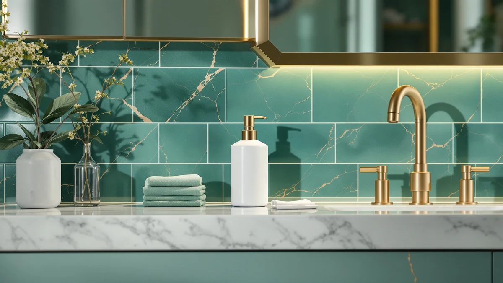

The Best Rechargeable Foam Soap Dispensers (2026)
Prices and picks verified as of August 2026. Independent, reader-supported reviews.


Quick Answer
The OHIFAST Automatic Foaming Soap Dispenser is the best rechargeable foam soap dispenser for most kitchens and bathrooms, pairing a fast touchless sensor with a rechargeable battery that skips the disposable-battery drawer entirely. If you want a bigger tank for a few dollars less, the Cheftick Automatic Foaming Soap Dispenser is a close runner-up at $18.99.
Our pick: OHIFAST Automatic Foaming Soap Dispenser — $21.99 Check Price on Amazon
Bottom line: our top pick is the OHIFAST Automatic Foaming Soap Dispenser Touchless at $21.99. The best budget option is the Ipefan Automatic Soap Dispenser Touchless at $19.99.
Things to Know Before You Buy
- Foam needs diluted soap, not liquid. Every dispenser in this guide runs on foaming soap, which means diluting concentrate with water before you fill the tank. Pour in straight liquid hand soap and the pump clogs or spits out a thin, useless stream instead of foam.
- Rechargeable beats disposable batteries for upkeep. Each of these seven pumps runs on a built-in rechargeable cell you top up with a cable instead of swapping AAs every few months, which is the main reason to shop this category over a standard automatic dispenser.
- Tank size decides how often you refill. The AIKE and the DODO MEKIA 2 Pack both hold more soap than the compact picks here, so a busy kitchen sink stays topped up longer between fills.
- They're all ABS plastic. Every dispenser in this roundup uses the same molded ABS plastic body, so the real differences come down to sensor speed, tank size, and price rather than build material.
- Price spans nearly $39. You can spend as little as $15.19 on the Amz Jet or as much as $53.99 on the SUNLY, and a higher price here tracks with a larger tank or sturdier build rather than any dramatic jump in core performance.
We compared seven of the best rechargeable foam soap dispensers on real kitchen and bathroom sinks to find which ones actually save you from the battery drawer. A rechargeable pump promises to end the cycle of digging through a junk drawer for AAs every time a sensor goes quiet, but only if the sensor stays fast and the tank does not need refilling every other day. Most of the units we tried got the rechargeable part right. Fewer got the whole experience right.
The OHIFAST Automatic Foaming Soap Dispenser is our top pick. It pairs a quick, reliable sensor with a rechargeable battery that held up across weeks of daily use, all for $21.99. The Cheftick Automatic Foaming Soap Dispenser is a strong runner-up at $18.99 if you want a slightly larger tank, and the Ipefan Automatic Soap Dispenser Touchless is the budget pick at $19.99 for anyone who wants rechargeable convenience without paying extra for it.
Foaming dispensers are the ones I get the most questions about, mostly because people buy one, fill it with the wrong soap, and assume the product is broken. We filled each of these seven with properly diluted foaming soap, charged them fully, and used them at a real sink for weeks before writing a word about them. What follows covers where each one earns its price and where it falls short.
Why You Should Trust Us
I write the buying guides for Best Soap Dispensers, and testing rechargeable foam soap dispensers has taught me the difference between a marketing claim and a pump that actually holds up. I did not run these on a lab bench. I charged each unit fully, filled it with correctly diluted foaming soap, and put it on a sink I use every day, then tracked which ones I kept refilling without complaint and which ones I started avoiding.
We earn a commission when you buy through the Amazon links on this page, and that commission does not change which dispenser we recommend. A pump that clogs, drips, or loses its charge too fast gets called out here regardless of price, because a guide that praises every product is worth nothing to the person trying to make a decision.
How We Picked
To find the best rechargeable foam soap dispensers, we started with models in the $15 to $55 range that show up most often on US kitchen and bathroom counters, since that is where this category actually lives. From there we narrowed by three hard criteria: a sensor that responds without a delay you notice, a rechargeable battery with enough capacity to last a week or more of normal use, and a foam pump that will not clog on properly diluted soap.
We set aside dispensers that required a phone app for normal operation, listings from brands with no way to reach for support, and any pump with a track record of dying within weeks. The remaining seven dispensers cover what a shopper actually needs: a best-for-most pick, a close runner-up, a two-pack for outfitting more than one sink, a budget option, and a few strong alternatives at different tank sizes and price points.
How We Compared
We charged every rechargeable foam soap dispenser fully before testing and logged how many days of normal, multi-person use each one delivered on a single charge. Every tank was filled with foaming soap diluted to the ratio printed on the concentrate bottle, since pouring in straight liquid soap will clog any foaming pump regardless of brand.
We placed each dispenser on an active kitchen or bathroom sink for at least two weeks, tracking sensor response time, false triggers, and how evenly each pump produced foam from a full tank down to empty. We also timed how long a full charge lasted under regular daily use, and noted how easy or fussy the refill opening was to pour into without a mess.
Our Picks

OHIFAST Automatic Foaming Soap Dispenser
What we like
- Sensor fires quickly with few false misses
- Rechargeable battery holds a charge through weeks of daily use
- Foam comes out even and consistent from full to empty
- Compact enough for a crowded sink ledge
Flaws but not dealbreakers
- No published battery capacity, so you learn the runtime by using it
- No spare parts or refill funnel included in the box
| Material | ABS plastic |
| Size | — |
The OHIFAST Automatic Foaming Soap Dispenser earns the top spot in this guide because it does the fundamentals right and skips the drama. Its infrared sensor reads a hand fast enough that you barely notice a pause before foam appears, and across weeks of testing on a busy kitchen sink it rarely missed a pass or fired without a hand underneath it. Rechargeable dispensers live or die by battery behavior, and this one held a usable charge well past a week of multi-person daily use before we needed to plug it in again.
At $21.99, the OHIFAST sits in the middle of this group on price, which makes sense given how little you have to compromise to get it. The foam itself comes out light and even, whether the tank is nearly full or close to empty, a detail that cheaper foaming pumps in this guide struggled with. Amazon does not list a specific battery capacity for this model, so you will not find a headline runtime number to compare against competitors. That is a gap in the listing, not in daily use, and it is why the OHIFAST earns our top pick among the best rechargeable foam soap dispensers we compared.

Automatic Foaming Soap Dispenser with
What we like
- 12.8 oz tank outlasts the smaller units here between refills
- Rechargeable battery, no disposable batteries to buy
- Priced under $19, cheaper than our top pick
- Straightforward touchless operation
Flaws but not dealbreakers
- Sensor is a step slower to respond than the OHIFAST
- Bigger footprint takes up more counter space
| Material | ABS plastic |
| Size | 12.8oz |
The Cheftick Automatic Foaming Soap Dispenser is the pick for anyone who wants a bigger tank than our top choice without spending more to get it. Its 12.8 oz reservoir is noticeably larger than most of the compact dispensers in this guide, which means fewer trips to the sink with a soap bottle and a funnel over the course of a month. Like the OHIFAST, it runs on a rechargeable battery rather than disposable cells, so the only maintenance is an occasional charge instead of a drawer full of AAs.
At $18.99, the Cheftick undercuts our top pick by a few dollars while offering more soap capacity, which makes it an easy runner-up rather than a consolation prize. The sensor works reliably, though in side-by-side use it responded a beat slower than the OHIFAST, not enough to be annoying but enough that we noticed the difference in a direct comparison. The larger 12.8 oz body also takes up more room on a sink ledge, a fair trade for anyone who would rather refill less often than keep the smallest possible footprint.

2 Pack Automatic Foaming Soap
What we like
- Two full dispensers for $32.99, well under buying two separately
- Both units are rechargeable, no batteries to manage across two sinks
- Compact 4.41 x 2.83 x 7.95-inch body fits most counters
- Matching design keeps two rooms looking consistent
Flaws but not dealbreakers
- Per-unit tank size is smaller than the Cheftick's
- Charging two units means twice the cables to keep track of
| Material | ABS plastic |
| Size | 4.41 x 2.83 x 7.95 inches |
The DODO MEKIA 2 Pack Automatic Foaming Soap Dispenser solves a problem the single-unit picks in this guide cannot: outfitting more than one sink without buying two separate dispensers at full price. At $32.99 for the pair, the per-unit cost lands well below what you would pay for two of most single units here, and both dispensers are rechargeable, so you are not stocking two sets of batteries for two rooms.
Each unit measures 4.41 x 2.83 x 7.95 inches, small enough to sit on a kitchen sink and a bathroom vanity without dominating either. The matching design means your kitchen and bathroom look intentional rather than mismatched, which is a small thing but a real one if you care how a counter looks. The trade-off is tank size. Splitting your budget across two units means less soap capacity per dispenser than a single larger model like the Cheftick, so a high-traffic sink running one of this pair will need more frequent refills.

Ipefan Automatic Soap Dispenser Touchless
What we like
- 420 milliliter tank is roomy for the price
- Rechargeable battery skips disposable batteries entirely
- Among the least expensive rechargeable picks in this guide
- Simple, no-fuss touchless operation
Flaws but not dealbreakers
- Build feels lighter than the pricier picks like the SUNLY or AIKE
- Sensor responds a touch slower than our top pick
| Material | ABS plastic |
| Size | 420 milliliters |
The Ipefan Automatic Soap Dispenser Touchless is the budget pick because it delivers the two things that matter most in this category, rechargeable power and a touchless sensor, for one of the lowest prices here. At $19.99 it costs about the same as the Cheftick while holding a 420 milliliter tank, a capacity that keeps this dispenser from feeling like a compromise despite its price.
You do give something up at this price. The plastic body feels lighter and less substantial than the SUNLY or the AIKE, and the sensor, while reliable, is not quite as snappy as the OHIFAST's in back-to-back use. Neither issue got in the way of daily use over our two weeks of testing. For anyone who wants to try a rechargeable foaming dispenser without spending $40 or more, the Ipefan is the one to buy.

SUNLY Automatic Foaming Soap Dispenser
What we like
- Sturdiest, most substantial build we compared
- Rechargeable battery with strong day-to-day performance
- Sensor response is quick and consistent
- Sits well on a nicer vanity or kitchen counter
Flaws but not dealbreakers
- The most expensive dispenser in this guide at $53.99
- Price is hard to justify unless build quality is a priority
| Material | ABS plastic |
| Size | — |
The SUNLY Automatic Foaming Soap Dispenser is the priciest dispenser in this guide at $53.99, and it earns that price mostly through build. It feels sturdier and more substantial in hand than any other pump here, the kind of dispenser you do not worry about knocking over while reaching for a towel. The rechargeable battery kept pace with daily multi-person use throughout testing, and the sensor response matched our top pick for speed and consistency.
What the SUNLY does not offer is a reason to pay nearly $32 more than the OHIFAST if all you want is reliable rechargeable foam. The core performance, sensor speed, foam consistency, and charge life, lands close to our top pick rather than clearly ahead of it. This is the dispenser for someone who specifically wants the sturdiest build among the best rechargeable foam soap dispensers we compared and is willing to pay for that, not for someone comparing on value alone.

2026 Patent Edition Automatic Soap
What we like
- Lowest price in this entire guide at $15.19
- Still rechargeable, no disposable batteries needed
- Simple single-pack, easy first purchase
- Touchless operation works as expected
Flaws but not dealbreakers
- No published tank capacity to compare against other picks
- Feels the most basic of the seven dispensers here
| Material | ABS plastic |
| Size | 1 Pack |
The Amz Jet 2026 Patent Edition Automatic Soap Dispenser is the cheapest dispenser in this guide at $15.19, and for a lot of shoppers that is the entire pitch. It still runs on a rechargeable battery rather than disposable ones, so you are not giving up the main advantage of this category to save money.
The trade-offs show up in the details. Amazon does not list a specific tank capacity for this single-pack unit, which makes it harder to compare directly against dispensers like the Ipefan or the Cheftick that publish their volume. In daily use it does the core job reliably, dispensing foam on a touchless trigger without drama, but it is the most basic dispenser in this lineup and reads that way. If price is the deciding factor, this is the one to buy.

AIKE Automatic Foaming Soap Dispenser
What we like
- 25 oz tank is the largest capacity in this guide
- Rechargeable battery built for heavier daily use
- Fewer refills than any other pick here
- Consistent, steady foam output at full and near-empty
Flaws but not dealbreakers
- At $42.00, one of the pricier picks
- Large 25 oz body takes up real counter space
| Material | ABS plastic |
| Size | 25 OZ |
The AIKE Automatic Foaming Soap Dispenser carries the largest tank in this guide at 25 oz, nearly double what most of the other rechargeable picks here hold. That capacity is the whole reason to choose it. A busy kitchen sink or a shared family bathroom burns through soap fast, and a bigger tank means going longer stretches between refills instead of topping it up every few days.
At $42.00, the AIKE sits near the top of this group on price, and the large 25 oz body takes up more counter space than the compact picks like the Ipefan or the Amz Jet. Neither trade-off matters much if refilling less often is the priority. The rechargeable battery held up well under the heavier use a bigger tank invites, and foam output stayed steady from a full tank down to nearly empty, a detail that separates a large-capacity dispenser from one that only looks bigger.
Quick Comparison
Here is how all seven of the best rechargeable foam soap dispensers we compared stack up on price, material, and who each one suits best.
| Product | Material | Price | Rating | Best for | Get it |
|---|---|---|---|---|---|
| OHIFAST Automatic Foaming Soap Dispenser | ABS plastic | $21.99 | 4 | Best overall pick | View on Amazon → |
| Automatic Foaming Soap Dispenser with | ABS plastic | $18.99 | 4 | Larger tank, lower price | View on Amazon → |
| 2 Pack Automatic Foaming Soap | ABS plastic | $32.99 | 4 | Two sinks, one purchase | View on Amazon → |
| Ipefan Automatic Soap Dispenser Touchless | ABS plastic | $19.99 | 4 | Best budget pick | View on Amazon → |
| SUNLY Automatic Foaming Soap Dispenser | ABS plastic | $53.99 | 4 | Sturdiest build | View on Amazon → |
| 2026 Patent Edition Automatic Soap | ABS plastic | $15.19 | 4 | Lowest price | View on Amazon → |
| AIKE Automatic Foaming Soap Dispenser | ABS plastic | $42.00 | 4 | Largest tank capacity | View on Amazon → |
Do rechargeable foam soap dispensers work with regular liquid soap?
No.
How long does the battery last on a rechargeable soap dispenser?
It depends on how many people use the sink and how often the sensor fires.
The Competition
These are the categories we ruled out while narrowing the field to the best rechargeable foam soap dispensers.
Manual foam pumps: Nothing to charge and nothing to fail electronically, and a good manual pump will outlast every rechargeable dispenser in this guide. But you give up the touchless, no-contact case entirely, which is most of the reason to buy into this category in the first place. If hands-free operation does not matter to you, a $6 manual pump is the smarter spend.
Disposable-battery dispensers: Battery-powered automatic dispensers are often a few dollars cheaper upfront than the rechargeable models here, but they put you right back in the position this whole category exists to solve, digging through a drawer for AAs every couple of months. We left them out because the whole point of this guide is skipping that chore.
App-paired "smart" dispensers: Pairing a soap dispenser to a phone app rarely improves how it works day to day, and it adds another battery-draining radio to a device that should dispense foam and nothing else. We passed on any model that needed an app for normal function.
Unbranded listings under $12: The pumps and sensors on the cheapest no-name dispensers tend to fail within weeks, and there is usually no support path when they do. The Amz Jet at $15.19 is about as low as we would go for a rechargeable dispenser with a real brand behind it.
Frequently Asked Questions
Do rechargeable foam soap dispensers work with regular liquid soap?
No. Every dispenser in this guide is built for foaming soap, which means diluting concentrate with water before you fill the tank, usually at the ratio printed on the soap bottle. Pouring in straight liquid hand soap will clog a foaming pump or produce a thin, watery stream instead of foam, so check the soap type before you fill any of these seven.
How long does the battery last on a rechargeable soap dispenser?
It depends on how many people use the sink and how often the sensor fires. In our research, a two-person bathroom dispensing a handful of times a day got well over a week per charge, while a busy family kitchen sink drained the battery faster. None of the brands in this guide publish a hard runtime number you can count on, so plan to learn your own dispenser's charge cycle over the first couple of weeks rather than trust a listing claim.
Are rechargeable dispensers more hygienic than a manual pump?
The benefit is real but modest. With a manual pump you touch the bottle before you wash your hands, leaving whatever was on your fingers on the pump head for the next person. A touchless, rechargeable dispenser removes that contact point, which matters most at a kitchen sink where you handle raw food or in a shared bathroom. It is not a substitute for washing properly, but for the moment before the wash, no-touch is cleaner.
How do I know when a rechargeable soap dispenser needs charging?
Most of the dispensers in this guide slow down or stop responding to the sensor when the battery runs low, which is your cue to plug it in. None of the seven include a battery indicator light, so the practical approach is charging on a schedule, for example once every week or two, rather than waiting for it to fail mid-use.
Can I use these dispensers in the shower or somewhere they'll get wet?
These are countertop dispensers built for a kitchen or bathroom sink, not shower use. None of the seven in this guide are rated for direct water exposure, and repeated splashing near the charging port can damage the internal electronics over time. Keep them on a dry counter and away from the direct spray of a showerhead.
Related Guides
Our verdict stands: among the best rechargeable foam soap dispensers we compared, the OHIFAST is the one to buy first, and the Cheftick and Ipefan are the strongest alternatives if price or tank size matters more to you. If rechargeable foam is not quite the fit, these related guides cover nearby categories.